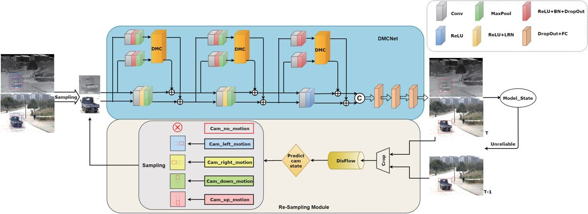
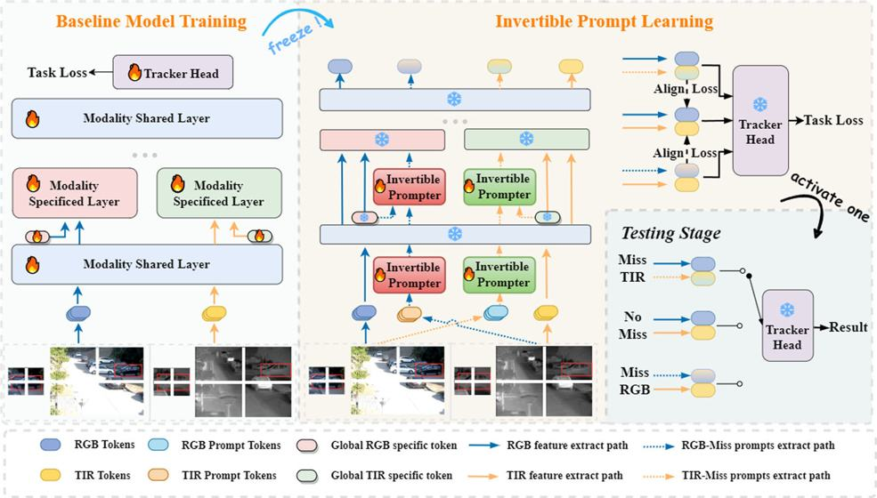
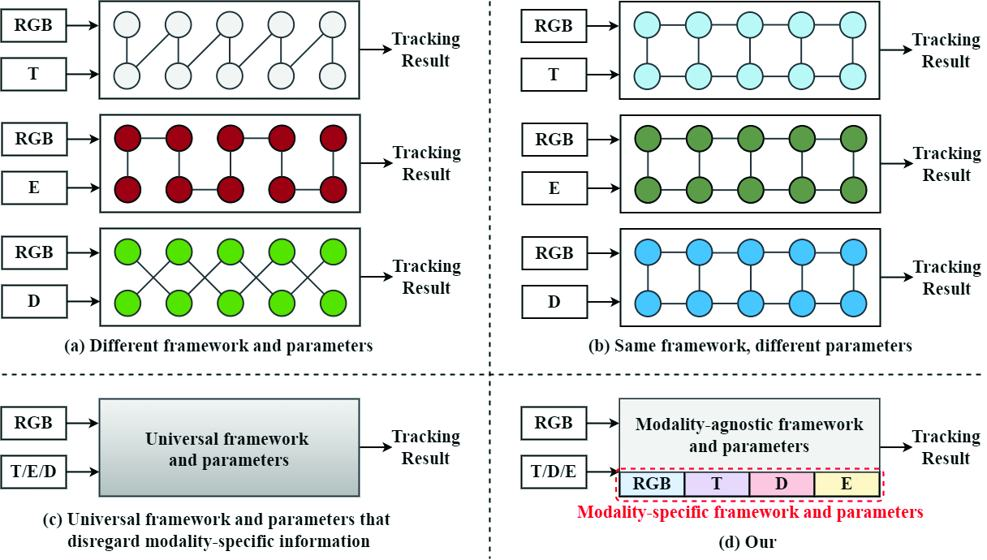
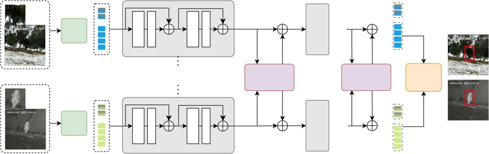
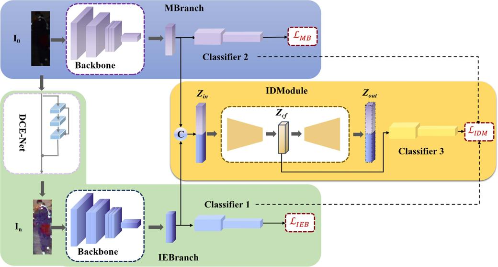
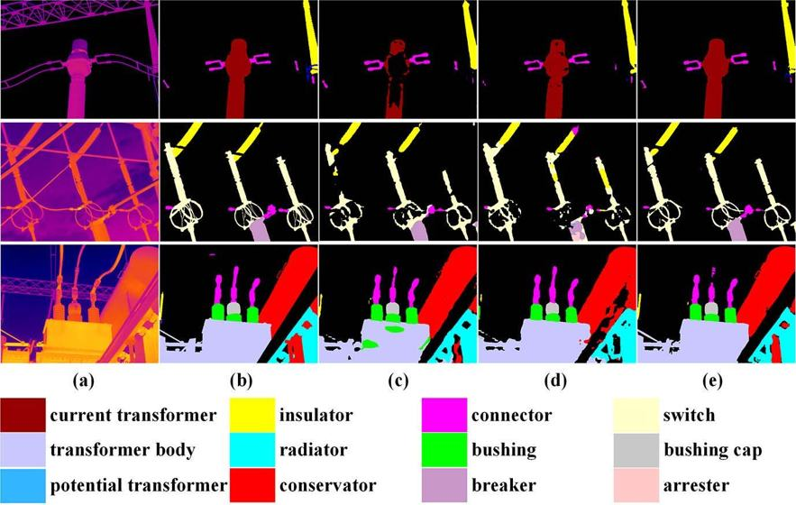
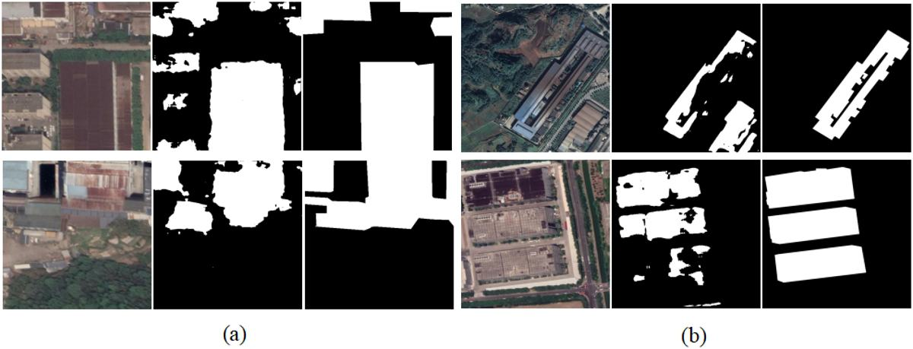
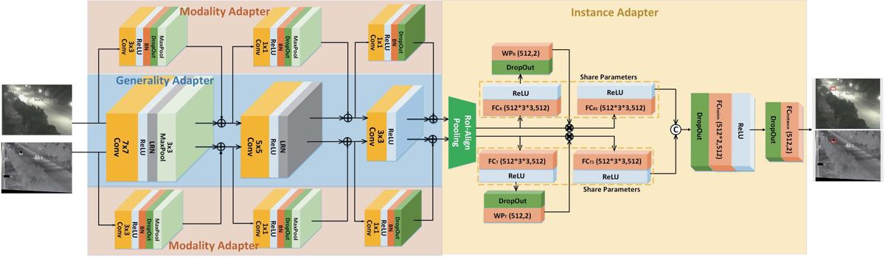

多模态视觉跟踪
面向 RGB-T、多模态缺失、复杂光照和跨模态差异场景，研究动态融合、提示学习、知识蒸馏和多层交互机制。
Academic Homepage
鹿安东，男，博士，安徽大学计算机科学与技术学院副教授。2023 年获得安徽大学计算机科学与技术工学博士学位，博士期间赴中国科学院自动化研究所智能感知计算中心王亮研究员课题组访学交流。2025 年博士后出站，并以绿色通道引进至安徽大学计算机科学与技术学院。
主要从事多模态视觉跟踪、高效视觉模型、无人机具身智能等方向的研究工作，已在 IJCV、IEEE TIP、TIFS、TNNLS、IEEE TMM、ACM MM、AAAI 等国际期刊与会议发表学术论文。主持国家自然科学基金青年项目、博士后面上项目、企业横向项目等科研项目。
Research Interests
面向 RGB-T、多模态缺失、复杂光照和跨模态差异场景，研究动态融合、提示学习、知识蒸馏和多层交互机制。
围绕动态路由、混合专家、Mamba、轻量化推理和多模态模型压缩，探索高效视觉感知模型的构建与部署。
面向无人机智能体的视觉感知、目标定位、实时跟踪与场景理解，开展具身感知与决策相关算法研究。
Selected Publications
IEEE Transactions on Image Processing, 34: 4386-4401, 2025
AAAI Conference on Artificial Intelligence, 2025
IEEE Transactions on Neural Networks and Learning Systems, 36(3), 2025

International Journal of Computer Vision, 133: 2599-2619, 2025

IEEE Transactions on Information Forensics and Security, 20: 1305-1319, 2025
IEEE Transactions on Circuits and Systems for Video Technology, 35(12), 2025

IEEE Signal Processing Letters, 32, 2025

ACM International Conference on Multimedia, 9291-9300, 2024
IEEE Transactions on Multimedia, 26, 2024

IEEE Transactions on Instrumentation and Measurement, 71, 2022

Remote Sensing, 14(22): 5657, 2022

IEEE Transactions on Image Processing, 30: 5613-5625, 2021

Research Showcase
面向盲多模态跟踪的 route-dynamic mixture of experts 框架。
通过 duality-gated mutual condition 建模低质量模态下的 RGBT 跟踪。
面向高效 RGBT 跟踪的多路径 Mamba 融合网络。
面向模态缺失 RGBT 跟踪的可逆提示学习与高质量基准。
Academic Services
担任 IEEE TPAMI、IJCV、Information Fusion、IEEE TIP、IEEE TMM、CVPR、AAAI、ACM MM 等期刊与会议审稿人。
Contact
欢迎围绕多模态视觉跟踪、高效模型、无人机具身智能及相关方向开展学术交流与合作。